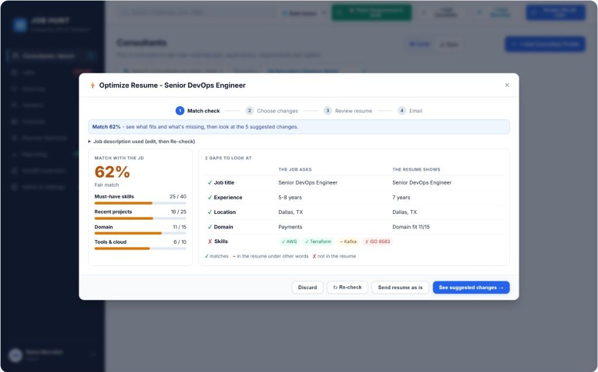
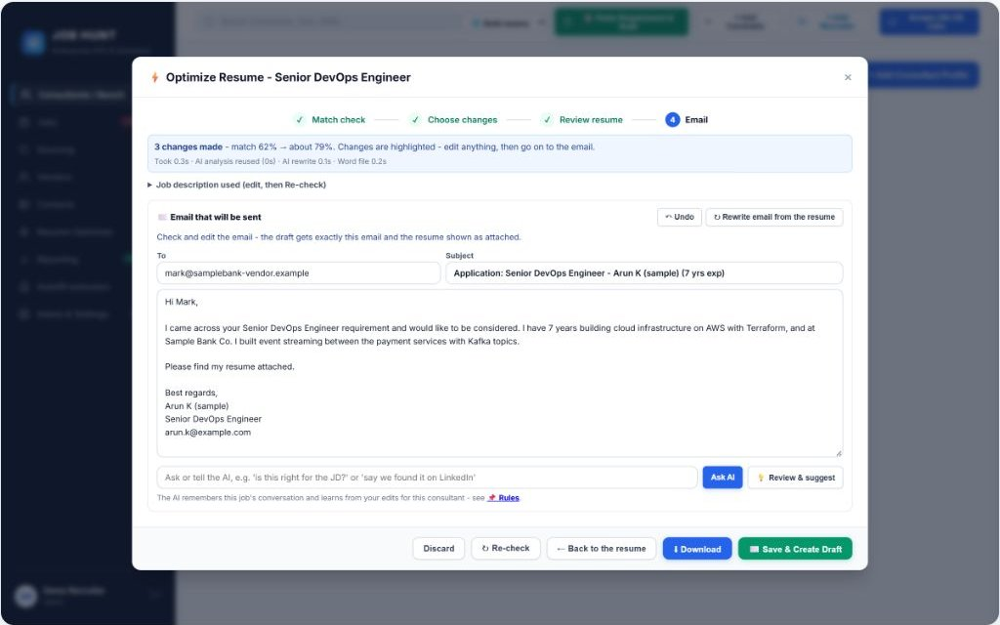

A recruiting ATS that tailors every submission
A live, multi-recruiter Applicant Tracking System for US and India staffing teams, built end to end in Python and Flask.


Situation
Recruiters on staffing teams searched several job boards by hand, rewrote each consultant's resume for every job, and emailed vendors one at a time.
Task
Build one tool that finds matching jobs, tailors resumes without inventing anything, and prepares each submission, while the recruiter stays in control of what is sent.
Action
Job sources→Match→Tailor→Recruiter approves→Draft or autofill
- One job search across Dice, LinkedIn, Indeed, Naukri and Foundit, plus 130 company career sites, filtered by each consultant's role, market and experience.
- AI resume tailoring with Google Gemini: a match check, then only the changes the recruiter approves, keeping the original Word formatting.
- A safeguard that blocks any technology the resume can't support, so the AI never invents skills.
- Gmail drafts from each consultant's own account with the tailored resume attached, plus vendor replies sorted with drafted answers.
- A Chrome extension (Manifest V3) that reads job pages, shows the match, tailors the resume and autofills career-site forms.
- Sourcing and contacts through Apify scrapers and the Apollo.io API, with each recruiter working under their own account.
Result
A live multi-recruiter app on Render, with Dice, LinkedIn, Indeed, Naukri, Foundit and 130 company career sites in one search, 90 automated test files, and every submission reviewed by a person before it goes out.
PythonFlaskPostgreSQLSupabaseGoogle GeminiGmail APIChrome Extension MV3ApifyApollo.ioDockerRenderPlaywright
← All projects